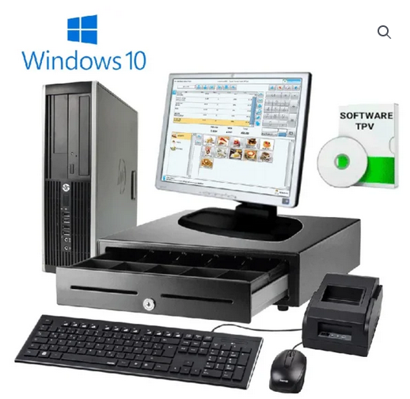
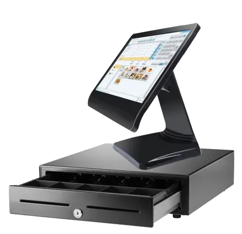
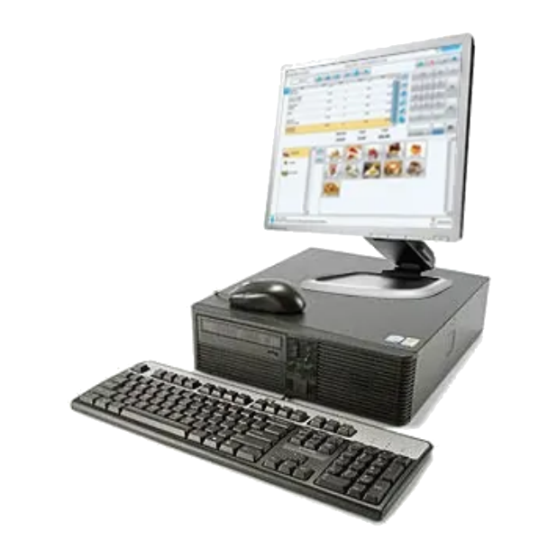

¿Qué es un sistema TPV modular?
Un sistema TPV (Terminal Punto de Venta) modular es un sistema de ventas y gestión que utiliza diferentes componentes interconectados para realizar transacciones y administrar un negocio. A diferencia de los sistemas TPV tradicionales, en los que todos los componentes están integrados en una sola unidad, los sistemas TPV modulares permiten la personalización y flexibilidad al permitir la conexión de diferentes módulos según las necesidades del negocio.
¿Qué puede incluir un sistema TPV modular?
Estos módulos pueden incluir una pantalla táctil para realizar ventas, un lector de código de barras para escanear productos, una impresora de recibos para generar comprobantes de compra, un cajón de dinero para gestionar el efectivo, un lector de tarjetas para aceptar pagos con tarjeta, entre otros. Además, los sistemas TPV modulares suelen contar con un software que permite realizar la gestión de inventario, gestionar clientes, generar informes y realizar otras tareas de administración.
¿Qué ventajas posee un sistema TPV modular?
La modularidad de un sistema TPV permite a los comerciantes adaptar el sistema a medida que sus necesidades cambian. Pueden agregar o quitar módulos según las necesidades del negocio, lo que les brinda flexibilidad y evita la necesidad de reemplazar todo el sistema si solo se requiere un cambio en un componente específico. Además, los sistemas TPV modulares también suelen ser escalables, lo que significa que se pueden ampliar para adaptarse a un mayor volumen de ventas o crecimiento del negocio.
Estos son algunos de los modelos TPV modulares disponibles
¡Tomese su tiempo para elegir el que más se ajuste a tus necesidades!
|

TPV completo 17" |

TPV Táctil 15,5" |

TPV 17" (no táctil) |
| Celda 4 | Celda 5 | Celda 6 |
| Celda 7 | Celda 8 | Celda 9 |
| Celda 10 | Celda 11 | Celda 12 |